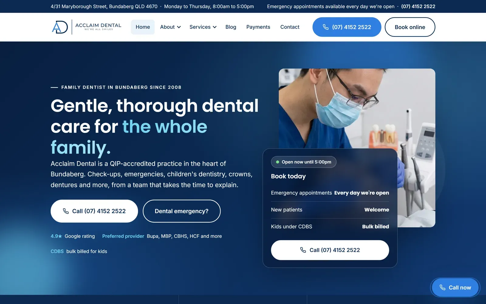
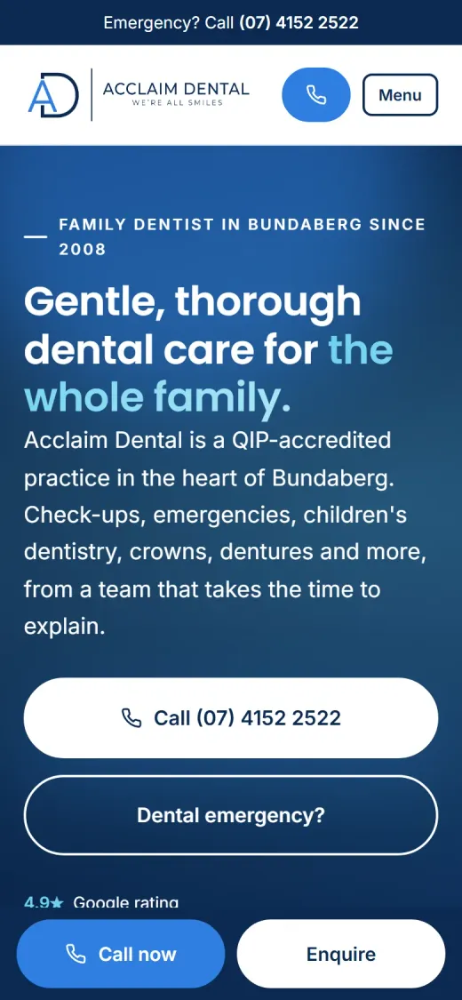

No. 01
WordPress Development
Acclaim Dental
A custom WordPress theme for a dental practice in Bundaberg, developed with a focus on responsive layouts, maintainable theme components, mobile usability and search-friendly website structure.
- My work
-
- Hand-coded custom theme, converted from a static design mockup
- PHP page templates and reusable template parts
- Customizer settings for replaceable site images and a featured article
- Responsive layouts, CSS and JavaScript refinements
- Search-friendly structure, with SEO output coordinated through the site's SEO plugin
- Mobile and accessibility improvements
- Stack
- WordPressPHPHTMLCSSJavaScript